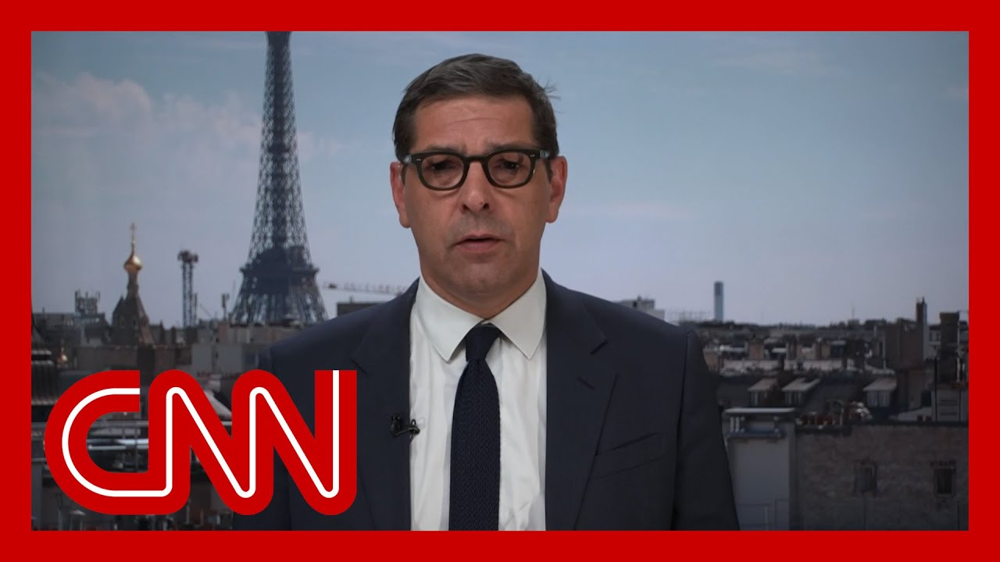

【欧洲支持特朗普对伊朗立场：法国官员确认推动“零浓缩”】
Summary: High-stakes negotiations begin in Geneva as European diplomats meet with Iran's foreign minister, aiming for a comprehensive deal amid ongoing tensions and military exchanges between Iran and Israel.
摘要： 日内瓦举行高风险谈判，欧洲外交官与伊朗外长会面，旨在达成全面协议，而伊朗与以色列之间的紧张局势和军事冲突仍在持续。

⏱️ Estimated Reading Time: 14 min
📚 六级生词 📚 雅思生词 📚 托福生词 📚 专八生词 📚 SAT生词 📚 考研生词 📚 GRE生词 📚 高考生词
Well, these new attacks happening?
这些新的袭击是怎么回事？
Just ahead, of course, is a high stakes meeting beginning in Switzerland.
当然，接下来是在瑞士开始的高风险会议。
Iran's foreign minister sitting down with European diplomats in Geneva after French President Emmanuel Macron said his country, Germany and the UK are ready to make an offer to Iran for what he described as complete negotiations.
伊朗外长在日内瓦与欧洲外交官会面，此前法国总统马克龙表示，法国、德国和英国已准备好向伊朗提出他所说的“全面谈判”提议。
Well before the meeting, the Iranian minister leveled criticism at Israel.
早在会议之前，伊朗部长就对以色列提出了批评。
Take a listen.
请听。
We were supposed to meet with Americans on 15th June to to craft a very promising agreement for peaceful resolution of the issues fabricated over our peaceful nuclear program.
我们本应在6月15日与美国人会面，制定一项非常有希望的协议，以和平解决围绕我们和平核计划捏造的问题。
It was a betrayal of diplomacy and an unprecedented blow to the foundation of international law and UN system.
这是对外交的背叛，也是对国际法和联合国体系基础的前所未有的打击。
Let me be clear.
让我说清楚。
If there is any use of costly systems and mechanisms we have created for the past eight decades to preserve human rights and dignity.
如果我们过去八十年建立的昂贵体系和机制有任何用处来维护人权和尊严。
Now is the time to do it.
现在就是采取行动的时候。
Well, with Donald Trump's, announcement that he wants to leave the door open for diplomacy for as long as two weeks, I want to talk about this European push, for negotiations or at least a dialog, with the French Foreign Ministry spokesperson, Christophe Lemoyne, who's joining me this hour from Paris.
随着唐纳德·特朗普宣布他希望为外交敞开大门长达两周，我想与法国外交部发言人克里斯托夫·勒穆瓦纳谈谈欧洲推动谈判或至少对话的努力，他此刻从巴黎加入我们。
it's good to have you, sir.
很高兴您能来，先生。
Thank you very much indeed for joining us.
非常感谢您的参与。
Foreign Minister Barrow briefed the US Secretary of State, Marco Rubio, on the planned approach for today's meeting.
巴罗外长向美国国务卿马可·鲁比奥简要介绍了今天会议的预定方针。
What exactly is that approach?
具体是什么方针？
Sir, can you explain?
先生，您能解释一下吗？
Well, there was there was a call yesterday between, French Minister Barrow and the secretary of state, Rubio on, you know, considering the situation that it is now and presenting the priorities of the of the French diplomacy, which is, you know, obtaining, a cease fire and going back to the negotiations.
昨天法国部长巴罗与国务卿鲁比奥通了电话，考虑到当前局势并提出了法国外交的优先事项，即实现停火并回到谈判桌上。
And the presentation was, you know, way to present what was what was all about, for today's meeting with the Iranians and, again, you know, de approaches based on let's go back to negotiation.
这次介绍是为了说明今天与伊朗人会议的内容，再次强调基于“让我们回到谈判”的方针。
let's do it in Europeans with the Iranians.
让我们欧洲人与伊朗人一起做这件事。
And let's see if there is a willingness on the Iranian part to restart, negotiating.
让我们看看伊朗方面是否有意愿重新开始谈判。
Does it help when the German chancellor says Israel is doing the world's dirty work?
德国总理说以色列在做世界的脏活，这有帮助吗？
well, you know, this is there has been a common European approach on Iran for the last decades in terms of, of negotiation and there has been an alignment between, you know, the UK, Germany, Germany and France.
你知道，过去几十年来欧洲在伊朗问题上一直采取共同谈判方针，英国、德国和法国之间一直保持一致。
And this this alignment is still is still valid today.
这种一致性今天仍然有效。
So this is what's happening in Geneva right now.
这就是现在日内瓦正在发生的事情。
Those three ministers, E3, ministers, are talking to the Iranians.
这三位部长，即E3部长，正在与伊朗人交谈。
And again, they are trying to reengage them on, on, on the negotiation.
他们再次试图让他们重新参与谈判。
Anything that happens on the military side must cease because there is no no military solution.
军事方面的一切行动必须停止，因为没有军事解决方案。
Well, it hasn't ceased.
然而，它并没有停止。
Iran and Israel had been exchanging strikes overnight, and Iran is just, sent, missiles into, Israel.
伊朗和以色列整夜互相袭击，伊朗刚刚向以色列发射了导弹。
We would just speaking to our correspondent in Haifa, where the impact of one of these missiles is very, very clear and very deadly.
我们刚刚与我们在海法的记者通话，其中一枚导弹的影响非常明显且致命。
The, French President, Emmanuel Macron, has said that the goal here is complete negotiations.
法国总统埃马纽埃尔·马克龙表示，目标是全面谈判。
Can you explain what he means by that?
您能解释一下他的意思吗？
What exactly does Europe mean by complete negotiations?
欧洲所说的全面谈判具体指什么？
Complete negotiations.
全面谈判。
It means that we offered, a package that that was proposed today to the Iranians, in Geneva, which which is meant to be, presenting a global solution for the whole situation, which means one part on the nuclear program, one part on the ballistic, on the ballistic program, one part on anything that he run does in financing proxies in the region that is highly destabilizing to the region.
这意味着我们今天在日内瓦向伊朗人提出了一揽子方案，旨在为整个局势提供一个全球解决方案，包括核计划部分、弹道计划部分、以及伊朗在该地区资助代理人的一切高度破坏稳定的行为。
And one other part on on other security matters, including, you know, the, stages and especially differential stages that are still held in Iran.
另一部分涉及其他安全问题，包括伊朗仍然持有的阶段，特别是差异阶段。
So this global package is meant to embrace the whole situation.
因此，这一全球方案旨在涵盖整个局势。
this this is a proposition, and we hope it's going to be a platform on which that could be further discussions with the Iranians and in, in a broader format with, with the United States or others, countries from the region.
这是一个提议，我们希望它将成为与伊朗人进一步讨论的平台，并以更广泛的形式与美国或该地区其他国家进行讨论。
I just wonder whether these complete negotiations, which extend beyond the nuclear file, then, reflect the scope of the American talks with Iran that were scheduled, of course, in their sixth round to happen on Sunday and haven't and haven't materialized.
我想知道这些超出核问题的全面谈判是否反映了美国与伊朗原定于周日举行的第六轮会谈的范围，但这些会谈尚未实现。
Or is this is this Europe wresting concessions and a wider scope out of Iran at a time when Iran is clearly weakened on its nuclear missile, fall?
或者这是欧洲在伊朗核导弹能力明显削弱时迫使伊朗做出让步并扩大谈判范围？
And indeed the regime itself.
以及政权本身。
Well, this proposition is to tackle to tackle the very core of the problem of the crisis that we are going through right now, which is first, you know, the nuclear program and B, the ballistic program and all the proxies that they finance.
这一提议旨在解决我们当前面临的危机的核心问题，首先是核计划，其次是弹道计划以及他们资助的所有代理人。
So it's meant to be tackling this in a very pragmatic and a very pragmatic way.
因此，它旨在以非常务实的方式解决这一问题。
So this is a proposition.
这是一个提议。
This is a start for negotiation.
这是谈判的开始。
We hope that we are able to move on on this and and to progress and to reach an agreement.
我们希望我们能够在此基础上继续前进并取得进展，达成协议。
And and I completely get that, you know, operations are still on and there are still, you know, strikes on Israel and strikes in Iran.
我完全理解，军事行动仍在继续，以色列和伊朗仍在互相袭击。
But, you know, each war ends with the negotiation.
但你知道，每场战争都以谈判结束。
And we hope that this negotiation is happening right now.
我们希望现在正在进行这场谈判。
Emmanuel Macron talked about, quote, moving towards zero enrichment.
埃马纽埃尔·马克龙谈到了“朝着零浓缩迈进”。
Does that suggest that zero enrichment is no longer a red line as stated by the US administration?
这是否意味着零浓缩不再是美国政府所说的红线？
Is has Europe moved moved the goalposts?
欧洲是否改变了目标？
Can I just try and understand a little about what the president meant?
我能试着理解一下总统的意思吗？
Yes, absolutely.
是的，当然。
That's what you know.
这就是你知道的。
Emmanuel Macron stated today and he stated it very, very clearly.
埃马纽埃尔·马克龙今天非常明确地表明了这一点。
And it's a it's a very, you know, it's a position that, that is that is very clear, you know, in the, in the framework that we're imagining of this negotiation, all this is taking place within the framework of the nonproliferation Treaty.
这是一个非常明确的立场，在我们设想的谈判框架内，这一切都在《不扩散核武器条约》的框架内进行。
And that treaty, you know, sets guidelines and sets, you know, obligation to the states that are parties to the treaty, which is the case of Iran.
该条约为缔约国设定了指导方针和义务，伊朗就是其中之一。
So there's zero enrichment is is is something that that we put on the table.
因此，零浓缩是我们摆在桌面上的内容。
And that's something we think will guarantee some, some stability because, there cannot be, you know, a military, nuclear program in Iran that that is not possible.
我们认为这将保证一定的稳定性，因为伊朗不可能拥有军事核计划。
So we have to set those kind of thresholds.
因此，我们必须设定这种门槛。
We have to be clear about this.
我们必须明确这一点。
And I think that's what President Macron said today, and that's what he wanted to state today, a clear position on zero enrichment.
我认为这就是马克龙总统今天所说的，也是他今天想表明的，即关于零浓缩的明确立场。
Do you worry at this point in France that Iran may actually pull out of the NPT?
在法国，您是否担心伊朗可能真的退出《不扩散核武器条约》？
We you know, we noticed that over the last two years, Iran has been escalating on its nuclear program.
你知道，我们注意到过去两年伊朗一直在升级其核计划。
They've been they've been, you know, going through thresholds and terms of enrichment in terms of production, in terms of not complying with their obligations within the JCPoA and within the Nonproliferation Treaty.
他们在生产和浓缩方面突破了门槛和条件，不遵守《联合全面行动计划》和《不扩散核武器条约》中的义务。
And this for us was very concerning and very worrying.
这对我们来说非常令人担忧。
And this is why now we are engaging them into serious negotiation, which means that they will have to comply with obligations and they will have to comply with verifications.
这就是为什么我们现在正在让他们参与严肃的谈判，这意味着他们必须遵守义务和核查。
And that something that is very important.
这一点非常重要。
There is a question about the transparency that they must have of their program.
关于他们的计划必须具有透明度的问题。
They haven't had it before and now they have to engage themselves in that.
他们以前没有做到，现在必须在这方面努力。
In that way.
以这种方式。
So again, what he's proposing is a negotiation, but with a stance that is very clear because we want to have a solid agreement at the end that will be that would be fulfilled by by everybody in the region.
因此，他再次提出的是谈判，但立场非常明确，因为我们希望最终达成一项坚实的协议，并由该地区的每个人履行。
The US Secretary of State, Marco Rubio, who you, a foreign minister, has has briefed, has reportedly just told your, foreign minister that the US and I quote Rubio here is ready for direct contact with the Iranians at any time.
据报道，美国国务卿马可·鲁比奥刚刚告诉您的外交部长，美国“随时准备与伊朗人直接接触”。
Firstly, is that likely?
首先，这有可能吗？
Secondly, that sounds like the US isn't putting much stock in, these discussions that don't directly include them.
其次，这听起来像是美国并不太重视这些不直接包括他们的讨论。
So is this Europe playing a bridge between the two?
那么这是欧洲在两者之间扮演桥梁角色吗？
At this point?
在这一点上？
I'm just trying to understand, what the point is.
我只是想理解重点是什么。
The point, I think, is to be pragmatic.
我认为重点是要务实。
Again.
再次。
We are, you know, advocating some kind of diplomatic way out of that crisis and any, anything, any effort, any initiative that will go into that direction will be, I think, welcome back by the Europeans.
你知道，我们主张通过某种外交方式摆脱这场危机，任何朝着这个方向努力或采取的行动都会受到欧洲人的欢迎。
So we've kicked off something today, in Geneva.
因此，我们今天在日内瓦启动了一些事情。
This is a good start for discussion.
这是讨论的良好开端。
We'll see how the Iranians are reacting.
我们将看看伊朗人如何反应。
But of course we we ready, you know, to open the discussions to other to others and and of course, the United States.
但当然，我们准备好向其他方面开放讨论，当然也包括美国。
but anything that we'll go into in, you know, what we think is the right direction, we'll have the support of France and the support of the Europeans.
但任何我们认为正确的方向，都会得到法国和欧洲的支持。